AI 에이전트가 바꾼 프로그래밍
DHH는 2025년 12월 무렵 AI 코딩에 대한 생각이 180도 바뀌었다고 말해요. 그 전까지는 코드를 거의 다 손으로 짰고, 37signals의 칸반 도구 Fizzy도 대부분 손으로 만들었어요. 지금은 새 코드를 하나도 빠짐없이 프롬프트로 시작해요.
편집본은 시작하자마자 이 사람이 누구인지 카드로 정리해요. 2004년 루비 온 레일즈를 공개했고, GitHub·Shopify·Airbnb가 처음 이 프레임워크로 만들어졌어요. 맨 아래 칸이 지금의 자리예요. 베이스캠프와 이메일 서비스 'HEY'를 만드는 37signals의 공동 소유자이자 CTO(Chief Technology Officer)예요.
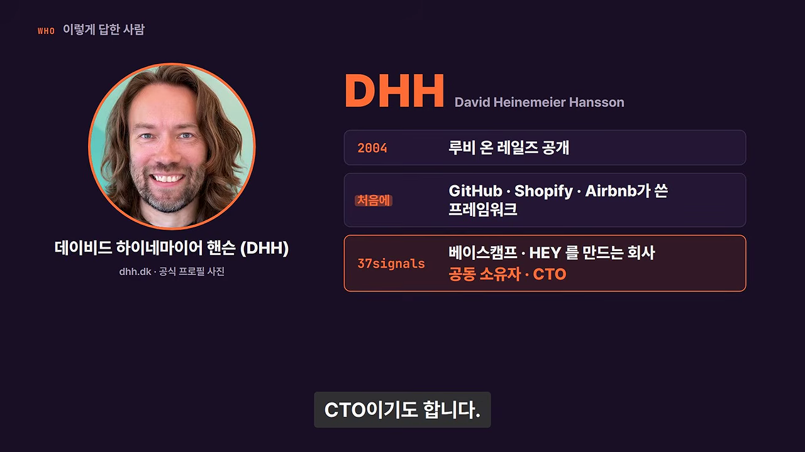
바로 다음 카드는 원래 대담의 썸네일이에요. 'NOBODY CAN STOP IT NOW'라는 제목과 2:01:31이라는 길이가 보여요. 이 편집본에서 빠진 40분가량은 원래 영상에서 볼 수 있어요.

자동완성이 싫었던 이유
당시 AI 코딩은 자동완성 방식이었어요. 편집기에서 내가 코드를 치면 AI가 다음 줄을 짐작해 채워 넣는 방식이죠. DHH는 처음부터 이게 싫었어요. 생각을 끝내려는데 누가 계속 끼어드는 느낌이었대요. 그래서 AI는 공부할 때, 오류 코드를 찾을 때, 새 라이브러리를 익힐 때만 썼어요.
아래 카드가 그 변화를 한 장으로 보여 줘요. 왼쪽 '2025.11까지' 칸에는 'AI = 과외 선생·검색 도구'와 '코드는 대부분 손으로'가 적혀 있고, 아래 줄에 빨간 취소선이 그어져 있어요. 오른쪽 '2025.12부터' 칸은 '완전히 뒤집힘'이에요.
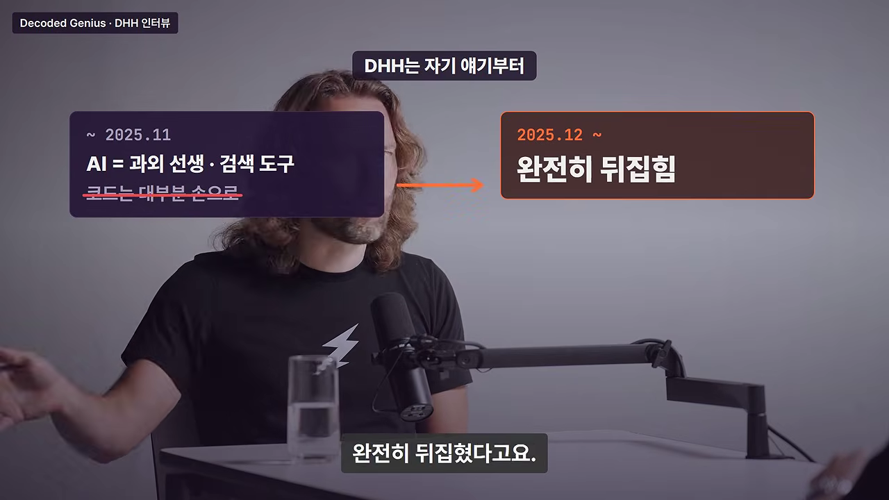
DHH가 꼽은 계기는 Opus 4.5 같은 모델과 OpenCode, Pi, Codex, Claude Code 같은 하네스예요. 이제는 다음 줄을 맞히는 게 아니라 에이전트에게 "이거 해 줄래?" 하고 임무를 맡겨요. 연말쯤 에이전트가 낸 코드를 보고, 처음으로 코드베이스에 합치고 싶다고 느꼈대요.
프로젝트 매니저가 아니라 바이오닉 팔
DHH는 에이전트를 쓰면 사람 개발자들을 관리하는 프로젝트 매니저처럼 될 거라 걱정했어요. 그는 직접 손을 더럽히는 일을 좋아하거든요. 막상 써 보니 전혀 달랐어요. 핵심은 피드백 속도예요. 사람 팀에 큰 일을 맡기면 몇 주, 길면 몇 달 뒤에야 결과를 봐요. 에이전트는 대개 몇 분, 큰 일도 몇 시간이면 돌아와요.
그래서 DHH는 이걸 일을 남에게 넘기는 게 아니라 자기 팔이 늘어난 것에 비유해요. 바이오닉 팔을 달아 사람 손으로는 못 할 힘을 내는 느낌이라는 거예요. 에이전트가 그의 취향에 맞는 '예쁜 코드'를 쓰게 된 것도 컸어요.
It feels more like I'm turning into a superhuman rather than I'm just giving up everything to some smarter robot.
더 똑똑한 로봇에게 모든 걸 넘겨주는 게 아니라, 제가 초인이 되어 가는 느낌이에요.
— 영상 06:22
힘들어진 개발자들
DHH는 모두가 이 변화를 반기진 않는다고 인정해요. 요구사항을 코드로 옮기는 과정 자체를 좋아하던 개발자는 힘들어하고 있어요. 1년 전만 해도 아이디어를 가진 사람들이 이들을 거쳐야 소프트웨어를 얻을 수 있었어요. 그들이 '귀한 자원'이었던 거죠. 그 자리가 줄어드는 상실감은 충분히 이해한다고 해요.
DHH 자신은 원래 프로그램이라는 결과물이 좋아서 프로그래밍을 배웠어요. 수십 년 동안 기술을 갈고닦으며 그 과정이 좋다고 스스로를 설득했을지도 모른대요. 에이전트 덕분에 처음의 동기로 돌아왔고, 여러 아이디어를 동시에 좇을 수 있게 됐어요. 다만 이 모든 게 반년 사이에 일어났으니, 6개월 뒤를 예측하는 데는 누구든 겸손해야 한다고 덧붙여요.
왜 투자를 받지 않았을까요
호스트는 DHH를 이렇게 소개해요. 25년 동안, 투자자에게 내준 경영권은 0달러, 이익은 수천만 달러. 이 세 숫자가 이 영상 제목의 출처예요.
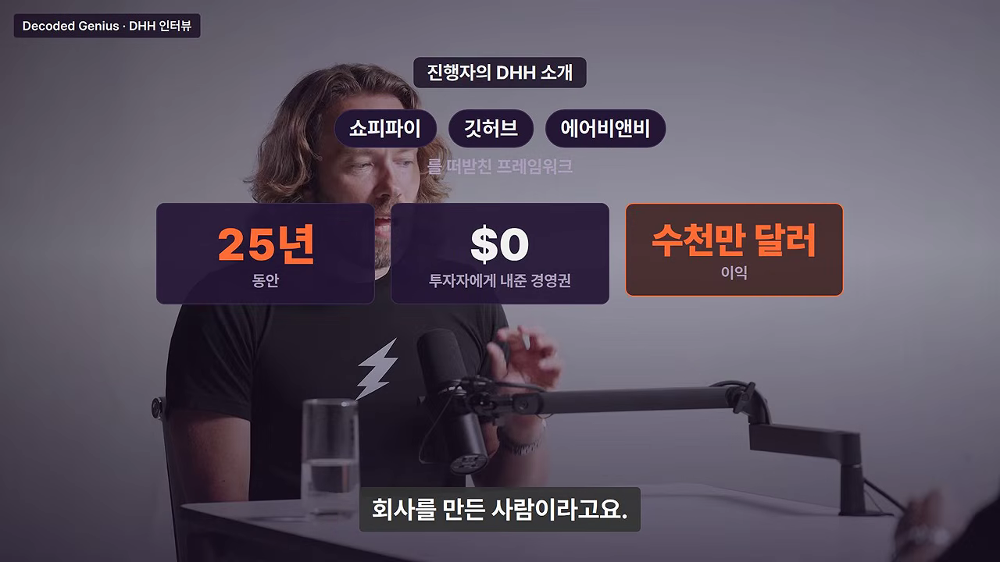
호스트의 첫 질문은 "왜 부트스트래핑을 택했나"예요. 편집본은 두 길을 나란히 놓아요. 왼쪽 주황 칸이 번 돈으로만 성장하는 부트스트래핑, 오른쪽이 투자를 받아 빠르게 크는 실리콘밸리의 '정석' 벤처캐피털이에요. 아래 주황 표시가 DHH의 이유, 90년대 중반부터 2000년대 초예요.
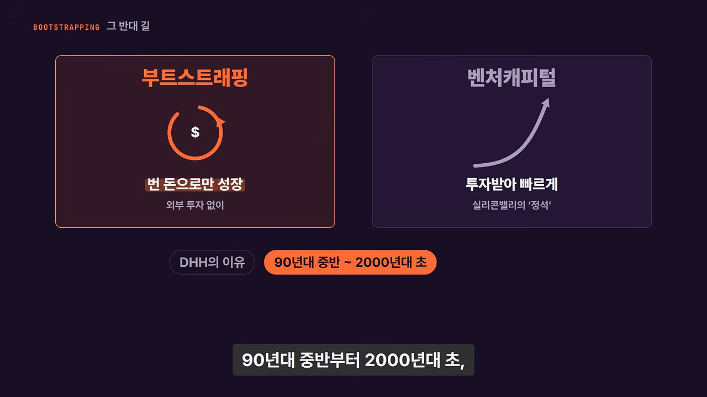
닷컴 붕괴가 남긴 흔적
90년대 말에는 인터넷 비슷한 말만 해도 투자금이 쏟아졌어요. 이익을 내서 갚을 수 있는 사업인지는 따지지 않았죠. 결국 거품이 꺼졌고, 한동안 업계는 폐허 같았어요. DHH는 엄청난 투자를 받았다가 무너져 사람들이 해고되는 회사를 직접 봤어요.
DHH는 이걸 대공황 세대에 빗대요. 화면 위에 'The Depression'과 버터 그림이 뜨는 장면이에요. 수십 년이 지나도 "버터 더 줄까?" 하고 묻는 할머니처럼, 젊을 때 겪은 위기는 평생 흔적을 남긴다는 거예요.
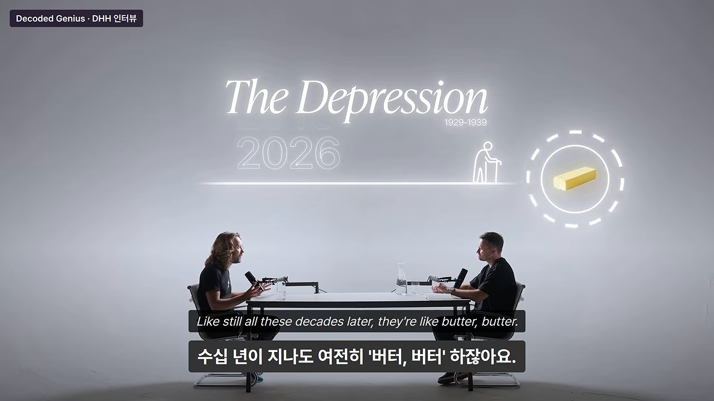
그래서 둘은 비용은 천천히 늘리고, 번 돈 안에서 살면서도 큰 야망을 품는 회사를 만들고 싶었어요. 소프트웨어는 공장을 짓는 사업이 아니니 몇 사람이 앉아 코드만 쓰면 돼요. 당시 '100명까지 키워야 성공'이라는 분위기에 DHH는 "100명으로 뭘 하지?" 하고 되물었대요.
근거는 베이스캠프였어요. 기술 쪽은 DHH 혼자 만들었고, 디자인은 제이슨과 라이언이 맡았어요. 20년 전 컴퓨터로 만든 제품이 22년째 팔리며 누적 수억 달러 매출을 냈어요. 2000년대 중반 37signals는 7명이 제품 4개를 운영하며 해마다 새 제품을 냈어요.
편집본은 베이스캠프가 어떤 제품인지도 카드로 풀어 줘요. 프로젝트는 대부분 이메일 스레드로 시작하는데, 세 번째·네 번째 사람이 끼는 순간 일이 새기 시작해요. 오른쪽 두 칸이 베이스캠프가 지키려 한 두 가지예요. 일이 새지 않게, 그리고 처음 초대받은 사람도 설명서 없이 바로 쓸 수 있게.

제약이 무기인 이유
DHH는 큰 팀이 불필요한 수준을 넘어 해롭다고 말해요. 그는 100명짜리 팀을 가진 자기 자신을 못 믿는대요. 핵심 10개로 추려야 할 아이디어를 50개, 70개씩 다 하려 들 거라서요. 12명이 모여 회의하며 이리저리 핑퐁하는 대신, 혼자 문 닫고 일하다 가끔 두세 명이 모이는 쪽을 좋아해요.
위대한 디자이너와 예술가는 아끼는 아이디어를 죽일 줄 알아요. 무한한 자원과 시간을 주면 그들도 망가뜨린다는 게 DHH의 생각이에요. 예로 드는 게 스타워즈예요. 컴퓨터 없이 판지 모형으로 만든 원조 3부작이 100배 예산의 후속작보다 낫다는 거예요.

사람을 10배 늘린다고 10배 빨라지지도 않아요. 소통 비용 때문에 오히려 느려지기 쉬워요. DHH는 AI 시대에 이 문제가 다시 온다고 봐요. 구현이 더 이상 병목이 아니면 떠오르는 아이디어를 다 만들 수 있고, 그러면 제품이 망가져요. 그래서 그는 무한한 시간과 자원이 '최악의 저주'라고 말해요.
지금 창업한다면
호스트는 "당신이 한 걸 지금도 똑같이 할 수 있나, 여전히 투자 없이?"라고 물어요. DHH의 첫마디는 큰 성공은 언제나 그 시대 상황의 산물이라는 거예요. 25년 전과 똑같이 할 순 없지만, 배울 건 많고 많은 게 오히려 쉬워졌대요.
DHH는 예전에 쓴 자기 글을 꺼내요. 편집본 카드 가운데 큰 글씨가 그 제목, '아이디어만 있는 사람의 자리는 없다'예요. 그 아래 두 칸이 그때 창업의 조건이에요. 직접 만들 줄 알거나, 남에게 맡길 돈이 있거나.
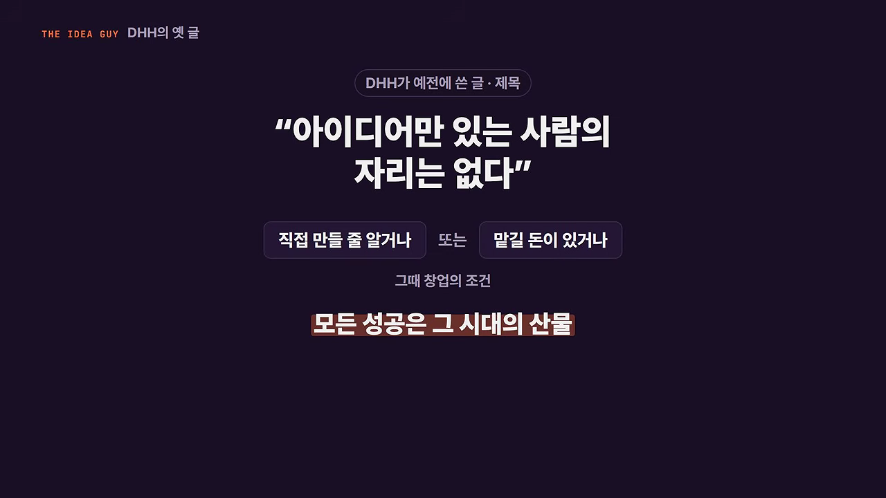
그때는 만들 줄도 모르고 돈도 없는 사람이 창업하려면, 개발자를 말로 꾀어 공짜나 지분 약속으로 일하게 해야 했어요. DHH는 이걸 '좀 사기 같은' 길이라고 봤어요. 지금은 다르대요. 월 20달러짜리 Claude 구독만으로도 사업이 될지 확인할 시제품을 만들 수 있어요. 말재주 없이도 아이디어가 있는 사람에게 창업의 문이 열린 거예요.
문이 열린 만큼 경쟁도 커졌다
시작이 쉬워지면 시작하는 사람도 많아져요. 내일 당장 복제품 10개가 나오지 않게 아이디어를 지킬 방법, 사람들에게 닿을 배포 경로, 관심을 끌 각도가 더 중요해졌어요. '좋은 걸 만들면 알아서 온다'는 말은 원래도 틀렸지만 지금처럼 틀린 적이 없대요.
25년 전에는 소프트웨어 자체가 적어서 괜찮은 제품이면 자연스럽게 발견됐어요. 지금은 이름 있는 팀이 내놓은 제품도 반짝 반응 뒤 조용해지는 걸 DHH는 여러 번 봤어요. 그래서 이걸 '원숭이 발' 소원에 빗대요. 창업이 쉬워지길 바랐더니, 20년 전보다 100배 치열한 경쟁판이 왔다는 거예요.
호스트가 배포와 제품 중 하나만 고르라고 하자, DHH는 둘 다 좋아야 돌파할 수 있다면서도 하나라면 배포를 골라요. 배포가 좋으면 적어도 그럭저럭 되는 사업은 만들 수 있지만, 배포가 형편없고 제품만 괜찮은 사업이 되는 시절은 끝났다고 말해요.
| 25년 전 | 지금 | |
|---|---|---|
| 창업 조건 | 직접 만들 줄 알거나 맡길 돈이 있어야 | 월 20달러 구독으로 시제품까지 |
| 경쟁 | 소프트웨어가 적어 자연스럽게 발견됨 | 20년 전보다 100배 치열 |
| 하나만 고른다면 | 좋은 제품 | 좋은 배포 |
제프 베조스와 세컨더리
37signals 이야기에 빠지지 않는 이름이 제프 베조스예요. 편집본 카드는 아마존 창업자 제프 베조스가 2006년에 37signals 지분 일부를 샀다고 정리해요.
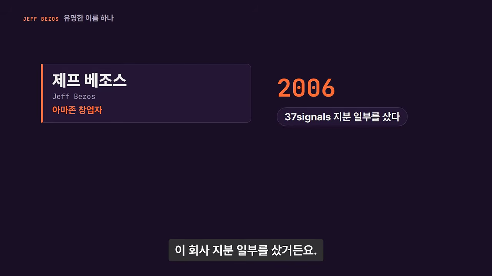
DHH의 답은 "저희는 세컨더리를 판 거예요"예요. 아래 카드의 윗줄이 일반 투자, 아랫줄이 세컨더리예요. 일반 투자는 투자자의 돈이 회사 통장으로 들어가요. 그 줄에는 빨간 취소선이 그어져 있어요. 세컨더리에서는 베조스가 창업자에게서 지분을 사고, 돈은 지분을 판 창업자에게 가요.

쫓아내려고 내민 종이 한 장
베조스가 관심을 보였을 때 37signals는 이미 비용과 성장 계획을 다 감당할 만큼 벌고 있었어요. 베이스캠프 출시 뒤 VC(Venture Capital) 40여 곳이 연락했지만 다 거절했대요. 그런데 베조스라면 이야기는 들어 볼 만했어요. 아마존이 아직 적자를 내던 때였지만, 무언가 특별한 걸 만든 사람이었으니까요. DHH는 평판도 일종의 배포라고 말해요. 다른 사람에겐 열리지 않을 대화를 열어 주니까요.
둘은 베조스를 쫓아 보내려고 말도 안 되는 텀시트를 내밀었어요. 보통 VC 앞에서는 발표 자료와 지표를 줄줄이 보여 주지만, 이번엔 종이 한 장에 핵심 지표 세 개와 '터무니없는 금액'만 적었대요. 베조스의 팀은 말도 안 된다고 했지만, 베조스는 그래도 걸어 보겠다고 했어요. 둘이 쓴 첫 책 『Getting Real』을 읽고, 숫자 너머의 무언가를 봤다는 거예요.
| DHH가 말한 보통의 VC 투자 | 베조스와의 거래 | |
|---|---|---|
| 돈이 가는 곳 | 회사 통장. 사람을 뽑고 마케팅에 써야 함 | 창업자. 일부는 챙겨 둘 수 있음 |
| 경영권 | 투자자에게 일부 넘어감 | 0 |
| 기한·엑시트 | 갚아야 할 약속이 생김 | 기한 없음, 엑시트 보장 없음 |
| 실패하면 | 남는 게 없음. 오히려 더 나빠짐 | 이미 챙긴 돈이 있어 후회 없음 |
지금 보면 그 금액은 전혀 터무니없지 않았어요. 거의 20년이 지난 지금 베조스의 지분 가치는 산 값의 몇 배가 됐어요. DHH는 계산으로는 안 맞는 베팅을 하고도 성공하는 베조스의 '합리적인 비합리성'이 부럽다면서, 그래서 자기는 아마존이 아니라 37signals를 운영한다고 웃어요.
판돈 일부를 먼저 챙기기
이 거래의 진짜 효과는 그다음이었어요. 둘 다 부자가 아니었고, 실패하면 다시 남의 회사에 다녀야 했어요. 그런 사람에게 "2천만 달러 넣어 줄까요?"라는 제안은 내 돈처럼 느껴져 흔들리기 쉬워요. 하지만 그 돈은 전부 회사에 들어가고, 실패하면 아무것도 남지 않아요. 진짜 큰돈 맛을 본 뒤라 오히려 더 나빠진대요.
베조스 거래로 돈 일부를 먼저 챙기자, 그 뒤로는 아무리 후한 VC 제안도 거절할 수 있었어요. 내년에 회사가 망해도 후회하지 않을 만큼 이미 챙겼으니까요. 베조스와는 1년에 한 번쯤 고민을 들고 가 이야기했는데, 그의 조언은 대개 이랬대요.
You know what to do. You should just do it.
할 일은 이미 알잖아요. 그냥 하세요.
— 영상 30:24
베조스가 본 건 무엇이었을까요. DHH는 '반항아'였을 거라고 답해요. 테크 불모지였던 시카고에서, 투자도 안 받고 다 직접 만들며 자기들이 더 잘 안다고 믿는 사람들이었으니까요. 베조스에게는 잔돈이었지만, 거의 빈 통장이 수백만 달러가 된 두 사람에게는 인생이 바뀌는 돈이었어요.
SaaS 계산이 멈춘 시대
호스트가 물어요. "그럼 지금 막 시작하는 창업자는 투자를 받아야 하나?" DHH의 기준은 단순해요. 사업에 공장, 재고처럼 묶이는 자본이 필요하면 투자를 생각해 볼 만해요. 그냥 사람들 월급 줄 돈이 필요한 거라면 그는 회의적이에요. 에이전트 덕분에 '이 아이디어에 뭐가 있나'를 확인하는 비용이 훨씬 싸졌기 때문이에요.
SaaS가 계산되던 시절
DHH는 소프트웨어 투자 분위기가 바뀐 이유를 SaaS의 계산법으로 설명해요. 편집본 카드가 그 계산을 그림으로 보여 줘요. 막대가 달마다 쌓이는 구독료예요. 오른쪽 위 두 칸이 고객 한 명을 데려오는 비용(CAC(Customer Acquisition Cost))과 떠나기 전까지 내는 돈(LTV(Lifetime Value))이에요. '두 숫자만 맞으면' 점선을 10년, 15년 뒤까지 그어 높은 기업가치를 매겼어요.
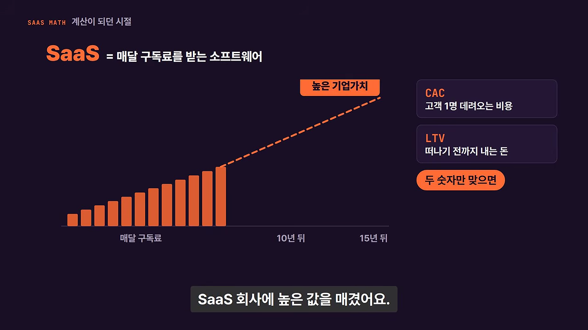
DHH는 2021년을 소프트웨어 역사상 최고점으로 꼽아요. 모두가 SaaS를 마법이라고 믿던 때예요. 화면에 뜨는 'Software VC Investment Deals' 그래프의 붉은 막대도 2021년 언저리에서 높다가 그 뒤로 뚝 떨어져요.
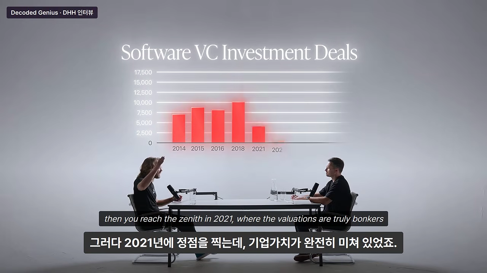
음악이 멈췄다
지금은 SaaS 회사의 반복 매출을 15년씩 내다보는 사람이 없어요. AI라는 조커가 나왔고, 6개월 뒤 세상도 모르니까요. 끝까지 내다볼 수 없으면 투자 논리가 흔들려요. 그래서 DHH는 지금이 순수 소프트웨어로 투자받기에 닷컴 붕괴 때만큼 나쁜 시기일 수 있다고 봐요. 낮은 배수를 받고, 사업을 어떻게 지킬 거냐는 어려운 질문을 받게 된대요.
예전에도 "마이크로소프트가 베이스캠프를 오피스 기능 하나로 만들면 어쩔래?"라는 질문은 받았어요. 그때 DHH의 답은 베이스캠프는 7~20명이 만들 수 있는 제품이지 5만 명짜리 회사가 만들 수 있는 제품이 아니라는 거였어요. 지금은 훨씬 많은 사람이 그런 시도를 쉽게 할 수 있어서 경쟁이 늘었어요.
그래도 DHH는 쉬운 투자금이 사라진 걸 축복으로 봐요. 다른 길을 찾아야 하니까요. 37signals도 시카고에 있었기에 투자를 받으려면 실리콘밸리로 옮겨야 했고, 그게 싫어서 다른 길을 갔어요. 주어진 상황을 사랑하라는 거예요. 직접 해야 하지만, 좋은 소식은 지금이 그 어느 때보다 쉽다는 거예요.
모든 결과를 받아들이다
AI가 베이스캠프와 SaaS 업계를 쓸어버릴 수도 있다는 이야기에, DHH는 이미 모든 결과를 받아들였다고 말해요. 베이스캠프는 2004년 2월, 페이스북과 거의 같은 날 나왔어요. 소프트웨어로는 영겁의 시간이죠. 그 사업에서 바랄 수 있는 건 다 얻었으니, 지금부터 오는 건 덤이라는 거예요. 연말에 AGI(Artificial General Intelligence)가 모든 걸 집어삼켜도 후회는 없대요.
이건 스토아 철학의 태도예요. 통제할 수 있는 건 출근하고, 최선의 소프트웨어를 만들고, 흥미로운 이야기를 해서 관심을 얻는 일이에요. 통제할 수 없는 건 AGI가 언제 오느냐예요. 그래서 DHH는 최악을 미리 상상해 봐요. 3개월 뒤 다 끝난다고 상상하고 마음의 평화를 찾는 거예요. 화를 내거나 야구 방망이로 데이터센터를 부숴 봐야 소용없으니까요.
진보는 멈추지 않는다
데이터센터를 부수자는 말은 역사에 이미 이름이 있어요. 러다이트 운동이에요. 편집본 카드 왼쪽이 1812년 '러다이트의 지도자' 판화, 오른쪽 위가 1811년 영국에서 일자리 잃은 직물 노동자들의 기계 파괴예요. 화살표 아래 칸이 2026년 지금, 여러 지역에서 건설 반대에 부딪힌 데이터센터예요.

DHH는 일자리를 잃는 건 개인에게는 비극이지만 사회 전체로는 꼭 필요하다고 말해요. 번영은 생산성 향상에서 오고, 생산성 향상은 결국 더 적은 사람이 같은 일을 하거나 같은 사람이 더 많은 일을 한다는 뜻이니까요.
값이 내려가면 수요가 오른다
낙관론자들의 기대는 이래요. 소프트웨어를 만드는 데 사람이 덜 들면 값이 내려가고, 값이 내려가면 수요가 크게 늘어요. 그러면 에이전트를 부려 소프트웨어를 만드는 사람이 오히려 많아질 수 있어요. DHH가 드는 근거는 ATM(Automated Teller Machine)이에요.
flowchart LR A["ATM 등장"] --> B["지점 여는 비용 하락"] --> C["은행이 지점을 많이 엶"] --> D["은행원이 오히려 늘어남"] E["AI 에이전트"] --> F["소프트웨어 값 하락"] --> G["소프트웨어 수요 증가"] --> H["에이전트를 부리는 사람 증가"]
농업도 예로 들어요. 한때 경제의 97%가 농업이었고, 사람들은 쟁기와 말로 밭을 갈았어요. 첫 트랙터를 본 농부는 일자리를 걱정했겠죠. 그런데 그때로 돌아가고 싶은 사람은 없어요. 개발자 중에 염소나 키우겠다는 낭만을 가진 사람이 많은데, 에어컨 나오는 방에서 키보드 두드리는 일이 얼마나 편한지 농사를 해 보면 안다고 DHH는 꼬집어요.
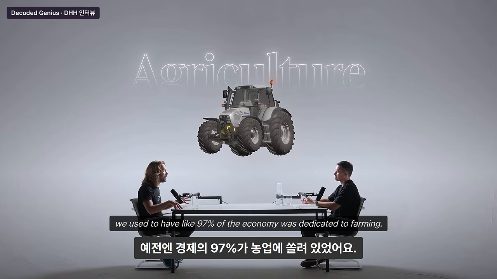
뒤처지는 사람들
호스트는 Claude Code도 프롬프트도 모르는 35·45·55세는 어떻게 되냐고 물어요. 부자는 더 부자가 되고 가난한 사람은 더 가난해질 거라는 걱정이죠. DHH는 '영구적인 하층 계급'이라는 악몽을 충분히 상상할 수 있다고 인정해요.
DHH는 지금 미국과 유럽의 정치적 불만이 자유무역에 대한 엘리트들의 가벼운 대답에서 왔다고 봐요. 공장이 아시아로 옮겨 갈 때 "아이폰이 싸졌잖아"라고만 했다는 거예요. 경제 전체는 나아졌어도 일자리와 집을 잃은 사람이 있었어요. 사회가 안정되려면 대부분의 사람이 나아지고 있다고 느껴야 해요. 그렇지 않으면 부자도 좋은 곳에서 살 수 없게 된대요.
그래도 할 수 있는 건 제한적이에요. 미국이 내일 AI를 금지해도 중국이 따라 멈추지 않아요. 한 나라가 진보를 일시정지할 순 없다는 거예요. 사회는 방향을 살짝 틀 의무가 있지만, 후진 기어는 없대요. 웨이모가 뉴욕에서 달리지 못하게 막자는 택시 기사들의 요구를, 모델 T를 막으려던 마차꾼에 빗대요.
진행자의 반박 — 걱정의 결이 다르다
여기서 호스트가 정면으로 반박해요. 화면 카드에 정리된 대로, 호스트는 자기도 엄청난 낙관주의자라고 전제해요. 그러면서 걱정은 일자리가 아니라 멸종 위험이라고 말해요. AI 안전 연구자 로만 얌폴스키의 말을 빌려, 3~5개 회사가 가드레일 없이 달리고 있고 아직 초지능 전이라 통제할 수 있다고 해요. 자기에게도 아이가 있는데, 장밋빛 안경을 쓰는 건 아니냐고 묻죠.
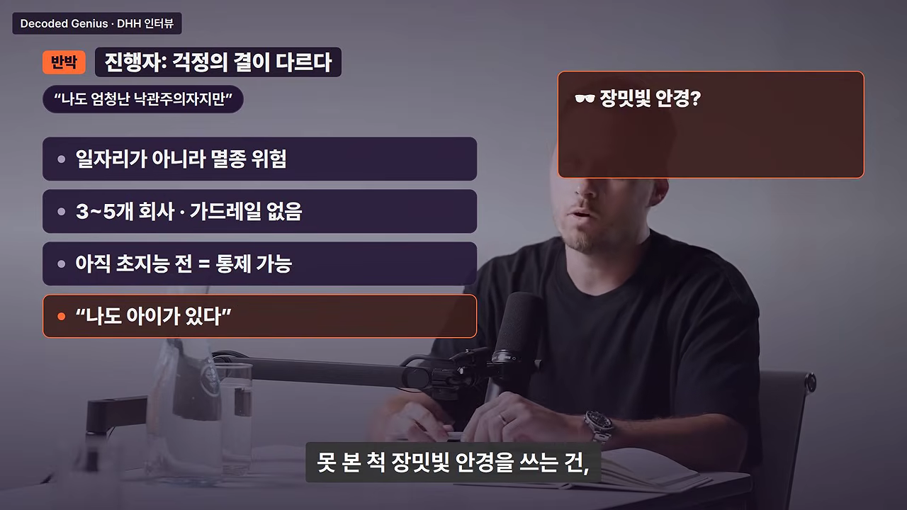
DHH의 답은 조건 하나로 시작해요. 내가 바꿀 힘이 있다고 믿는다면 걱정할 수도 있지만, 그럴 힘이 없다면 늘 걱정하는 게 무슨 도움이 되냐는 거예요. 그리고 인류는 늘 종말 이야기를 해 왔다고 짚어요. 옛날엔 종교의 심판의 날, 그다음엔 핵무기였어요. 핵은 지도자 한 명의 실수로 끝날 수 있는 더 직접적인 위협이었어요. 지금의 AI 공포는 꽤 많은 추론을 거쳐야 나온다는 거예요. 기후 걱정 때문에 아이를 갖지 않겠다는 유럽 사람들도 예로 들며, 그렇게 사는 건 삶이 아니라고 말해요.
원자력이라는 실수
그럼 진보가 멈춘 사례는 없을까요. DHH는 거의 없지만, 거꾸로 속도를 늦춘 사례가 하나 있다고 해요. 원자력이에요. 아래 카드의 보라색 선이 1986년 체르노빌 사고 뒤 원전 건설을 멈추거나 줄인 여러 서방 국가, 주황색 선이 70~80년대에 원전을 대거 지은 프랑스예요. 오른쪽 원그래프는 '프랑스 전기 절반 넘게 원자력'이에요.

DHH는 원자력을 가장 친환경적인 기저 전력이라고 불러요. 한 사람이 평생 쓸 전기를 만들고 남는 폐기물이 음료수 캔 크기래요. 체르노빌로 직접 죽은 사람은 아주 적고, 대기오염이 일주일에 죽이는 사람이 더 많을 거라고 말해요. 계속 원전을 지었다면 지금 데이터센터 전력 걱정도 없었을 거라는 거죠.
마지막 비유는 교통사고예요. 미국에서는 해마다 4만 2천 명이 차 사고로 죽어요. 모든 차의 제한속도를 시속 5km로 하면 사망자는 0명이 되겠죠. 그래도 우리는 출근하고 물건을 나르는 삶을 위해 그 대가를 감수해요. 주택가에서 시속 100마일은 막지만 차를 없애진 않아요. AI도 위험이 있다고 상자에 다시 넣을 순 없다는 게 DHH의 결론이에요.
| DHH가 든 사례 | 무엇을 보여 주나요 |
|---|---|
| 러다이트 운동 | 기계를 부숴도 기술은 멈추지 않았어요 |
| ATM과 은행원 | 값이 내려가면 수요가 늘어 일자리가 오히려 늘 수 있어요 |
| 농업 97%와 트랙터 | 생산성이 번영을 만들고, 아무도 그때로 돌아가고 싶어 하지 않아요 |
| 모델 T와 웨이모 | 기존 일자리를 지키려 새 기술을 막는 일은 늘 있었어요 |
| 핵무기 | 지금의 AI 공포보다 더 직접적인 위협도 사람들은 견디며 살았어요 |
| 원자력 | 진보를 늦추면 나중에 비싼 대가를 치러요 |
| 교통사고 사망자 | 모든 기술은 위험과 이득의 트레이드오프예요 |
DHH도 자동완성 시절에는 감자 농사나 지을까 생각했대요. 이 업계가 이렇게 된다면 그만두고 싶었던 거예요. 그러다 에이전트를 보고 기대기로 했어요. 어차피 선택권이 없으니, 비참해지기를 고르든 행복해지기를 고르든 그건 내 몫이라는 거예요. 그는 지금 컴퓨터가 스스로 해내는 걸 보며 매일 감탄한다고 말해요.
주 40시간과 라이프스타일 비즈니스
이야기는 영상 맨 앞의 질문으로 돌아와요. 호스트는 창업자라면 밤낮없이 하루 16시간 일해야 한다는 말을 들어 왔고, 얼마 전 출연한 창업자는 하루 18~20시간 일한다고 했대요. 대단한 회사를 만들려면 정말 그래야 하냐는 거죠. 카드 왼쪽이 '다들 들어 온 말' 16시간, 오른쪽 주황 칸이 그 창업자의 18·20시간이에요.
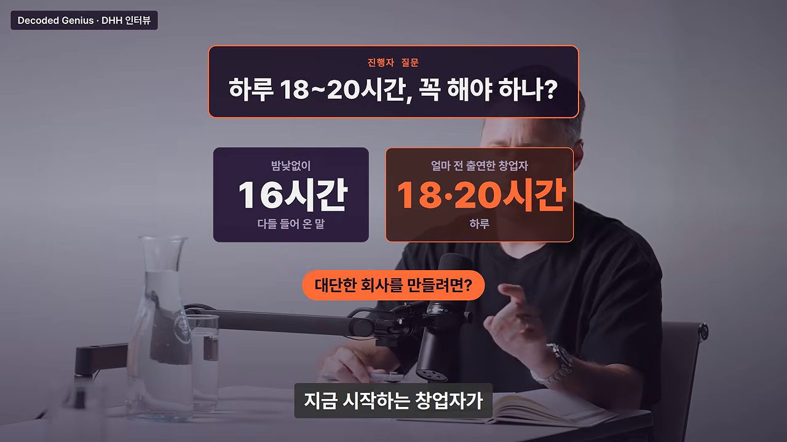
누그러진 이유는 이래요. 시간을 더 쏟으면 결과가 달라질 거라는 믿음은 틀렸지만, 거기엔 좋은 면도 있대요. 내가 움직이면 결과가 바뀐다는 자기 힘에 대한 믿음이니까요. 그래도 잠이 부족하거나 한 가지에만 매달리면 대부분은 오래 생산적일 수 없어요. 일론 머스크 같은 소수는 예외로 쳐 주지만, 보통 사람에게 주 120시간은 효과가 없다고 말해요.
반복 작업은 에이전트에게
에이전트 시대에는 더 그래요. 반복 작업은 컴퓨터 몫이에요. Claude는 토큰 값만 내면 밤새 돌려도 불평하지 않죠. 사람은 그 너머의 것을 더해야 해요. 푹 자고, 눈앞 일 말고도 넓게 보고, 산책이나 샤워 중에 좋은 아이디어를 얻는 거예요. 좋은 아이디어 하나가 두 달의 고생을 건너뛰게 해 준대요.
주 40시간이라는 이동평균
DHH는 짧은 기간이 아니라 긴 이동평균을 보라고 해요. 그의 지난 25년 이동평균은 주 40시간이에요. 80시간인 주도 몇 번 있었고, 그보다 적은 주도 있었어요. 그리고 모든 건 멱법칙이라고 말해요. 매주 사업에 쏟는 첫 10시간이 80시간에서 90시간 사이의 10시간보다 비교할 수 없이 중요하대요.
그 증거가 베이스캠프예요. DHH는 학교에 다니며 다른 고객 일도 해서 베이스캠프에 쓸 수 있는 시간이 주 10시간뿐이었어요. 그런데 그때가 인생에서 가장 생산적인 시간이었대요. 낭비할 시간이 없었으니까요. 80시간을 쏟으면 모든 움직임이 추진력이라고 착각하지만, 실제로는 대부분을 헛일에 쓴다고 말해요.
라이프스타일 비즈니스라는 비아냥
편집본은 여기서 37signals가 초창기부터 들어 온 말을 꺼내요. 카드 가운데 큰 글씨가 '라이프스타일 비즈니스'예요. 그 아래 칸들이 미국 스타트업 업계에서의 뜻이에요. 크게 키울 생각 없이, 먹고살 만큼만, 그래서 낮춰 부르는 말이라는 거죠. 맨 아래 줄이 DHH가 그 얘기에 앞서 짚는 냉정한 사실, '대부분 실패'예요.
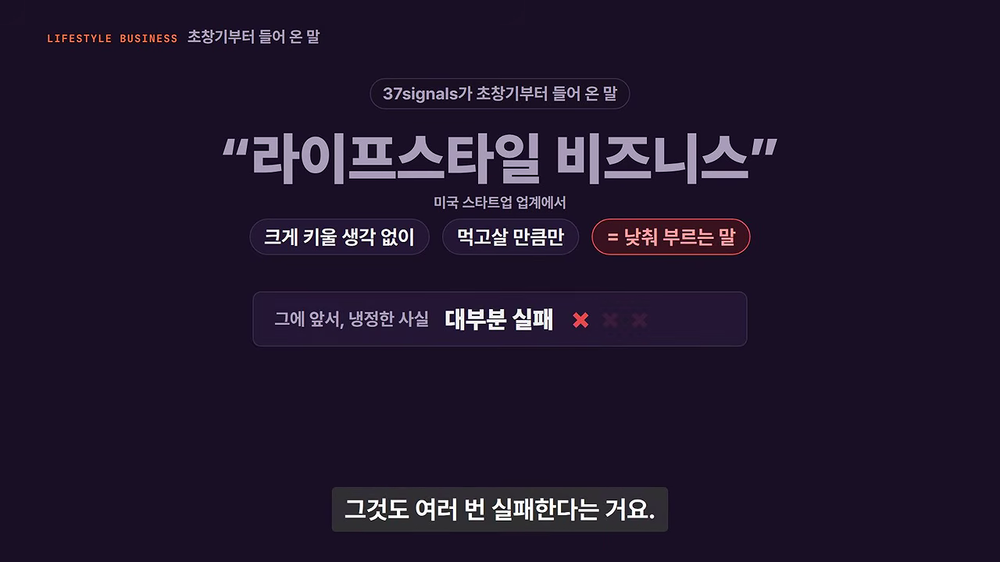
대부분의 사업은 실패하고, 대부분의 사람은 여러 번 실패해요. 20대부터 40대까지 쉬지 않고 갈아 넣어도 억만장자나 유니콘이 되긴 어려워요. 기껏해야 안타 몇 개죠. 그러니 실패했을 때도 대비해야 해요. 10년을 사업에 다 바쳤는데 무지개 끝에 금 항아리가 없다면, 사업이라는 의자 다리 하나만 남게 된대요.
DHH는 사업이냐 삶이냐 둘 중 하나를 골라야 한다는 걸 '미국의 큰 착각'이라고 불러요. 그에게 라이프스타일 비즈니스는 칭찬이에요. 삶도 있고 사업도 있다니 좋은 거잖아요. 일주일에 40시간쯤 재능을 사업에 쓰고, 남은 시간에 온전한 사람으로 사는 거예요. 일 자체도 사람에게 꼭 필요하다고 봐요. AI가 모든 걸 해 주는 유토피아에서 다들 화가가 될 거라는 건 착각이고, 실제로는 우울해질 거래요.
일론 머스크에게는 박수를
그렇다고 DHH가 일에 모든 걸 거는 사람을 깎아내리진 않아요. 아래 카드처럼 오히려 박수를 보낸다고 해요. 대표적인 예가 일론 머스크예요.
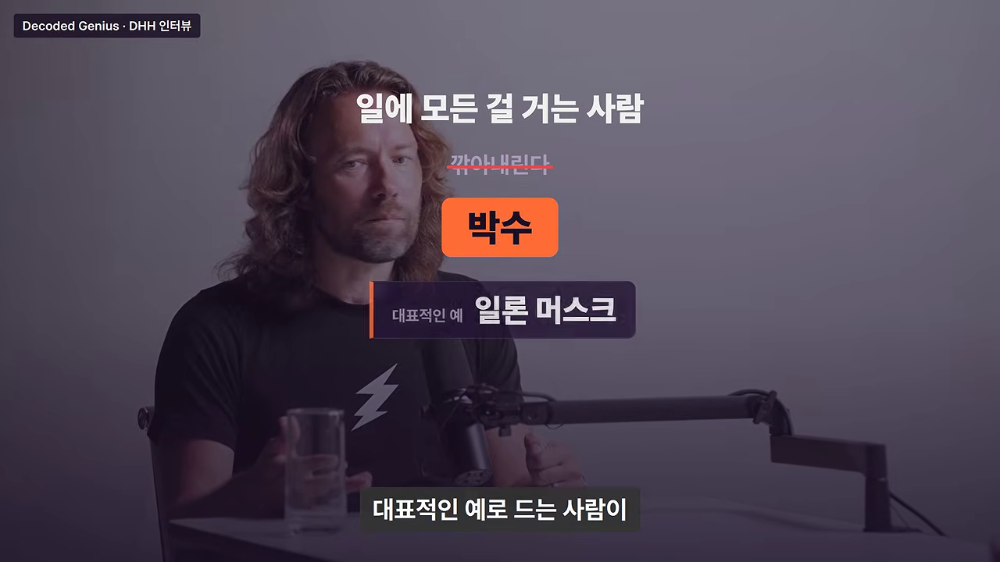
그런 삶은 수천만 명이 따라 할 재능도, 기질도, 운도 없다고 DHH는 말해요. 대부분은 수만에서 수십만 고객을 위한 좋은 사업을 만들고, 괜찮은 삶을 누리는 정도의 성공에 만족해야 한대요. 유럽처럼 모두가 적당한 야망만 가지면 경제가 잘 안 풀린다는 반론도 인정해요. 그래도 개인으로서는 20년 넘게 라이프스타일 비즈니스로 수억 달러 매출을 내며 가족과 삶을 누린 걸 무엇과도 바꾸지 않겠다고 해요.
핵심은 '나의 충분함'을 찾는 거예요. DHH에게 충분함은 남의 회사에서 9시부터 5시까지 일하는 게 아니었어요. 자기 사업을 하고, 멋진 차를 사고, 레이싱을 하고 싶었어요. 그걸 다 가졌고, 억만장자는 안 됐지만 괜찮대요. 그 정도면 이미 인류 역사상 가장 부유한 사람들 안에 든다는 거예요.
FU 머니와 독립
FU(F*** You) 머니는 싫은 건 싫다고 거절할 수 있을 만큼의 돈이에요. 호스트는 링크드인에서 본 말을 꺼내요. 예전의 꿈은 투자를 잔뜩 받아 10억 달러짜리 유니콘을 만드는 거였는데, 새로운 꿈은 투자 없이 1,000만 달러 규모의 SaaS 회사를 만드는 거라는 거예요. 아래 카드 왼쪽 칸의 '10억 달러 유니콘'에는 취소선이 그어지고, 오른쪽 주황 칸에 새 꿈이 적혀요.
숫자는 사는 방식에 달렸다
DHH는 예전엔 FU 머니를 100만 달러쯤으로 생각했대요. 지금은 원하는 삶에 따라 다르다고 봐요. '성공했다'의 기준이 전용기라면 1,000만 달러로도 모자라요. 그 사치만 참으면 수백만 달러면 충분하대요. 마음에 드는 곳에 살고, 만족스러운 집을 다 갚았다면 생각보다 적은 돈으로도 살 수 있다는 거예요.
FIRE(Financial Independence, Retire Early) 운동도 이야기해요. 목표 금액을 정하고 열심히 모은 다음 일찍 은퇴하는 방식이죠. DHH는 여기에 착각이 섞여 있다고 봐요. 그가 만난 가장 불행한 사람 중에는 일찍 은퇴한 사람이 많았대요. 특히 더 좋은 아이디어도 없이 회사를 팔아 버린 사람들이요. 다음 회사를 또 만들면 된다고 생각했지만, 다시 성공하기도, 다시 열정을 느낄 일을 찾기도 어려웠대요.
DHH는 베이스캠프가 아마 자기 인생 최고의 사업 아이디어이고, 그만한 아이디어는 다시 없을 거라고 담담하게 말해요. 창업자는 자기가 남보다 낫다고 믿어야 시작할 수 있지만, 그게 '좋은 아이디어가 끝없이 나온다'는 착각으로 넘어가면 안 된대요. 사업으로 성공할 아이디어 하나를 평생에 한 번 가지면 운이 좋은 거예요.
숫자에 닿은 다음
DHH는 목표 숫자에 닿았을 때 삶이 바뀔 거라 기대하지 말라고 해요. 편집본은 이걸 '아무도 믿지 않는 조언'이라고 이름 붙여요. 아래 카드의 주황 막대가 0에서 '목표한 숫자'까지 차오르고, 그 밑에 '그다음은?'이라고 물어요. 'DHH도 직접 겪기 전엔 안 믿었다'는 줄도 보여요.
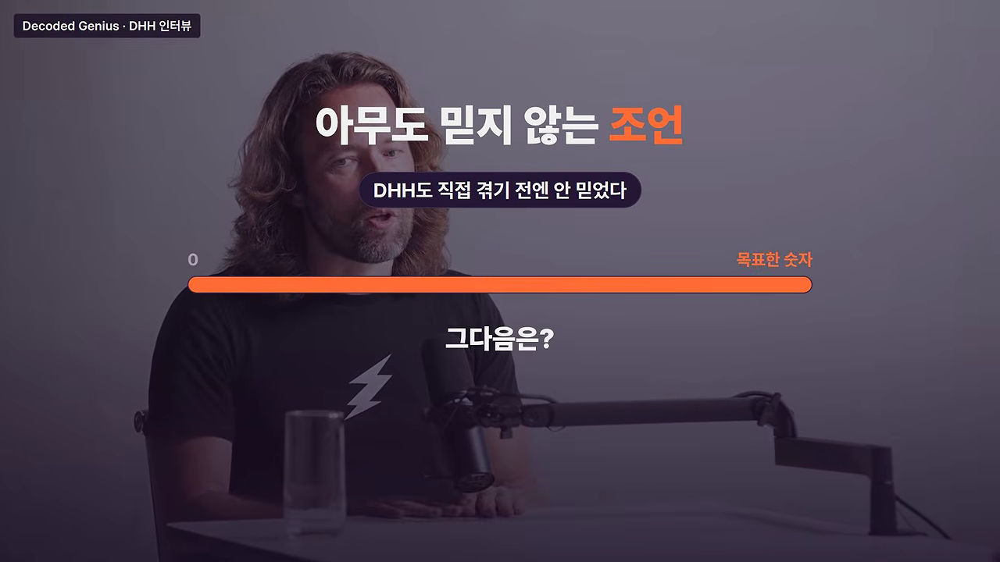
베조스 거래로 통장에 별것 없던 DHH에게 갑자기 수백만 달러가 생겼어요. 그는 이제 삶이 마법처럼 장밋빛이 될 줄 알았대요. 그렇지 않았어요. 회사를 팔거나 큰 성공을 거둬도 월요일은 오고, 머릿속 문제들은 그대로 남아요. 물론 가난하고 불행한 것보다 부유하고 불행한 게 훨씬 낫다고 웃으며 덧붙여요. 이 말은 남에게 전해도 안 믿는대요. DHH 자신도 겪기 전엔 안 믿었으니까요.
값을 매길 수 없는 독립
그래도 FU 머니를 '마음가짐'으로 가지는 건 큰 힘이 된대요. 덕분에 좋은 결정을 할 수 있었어요. 예를 들면 VC 돈을 받지 않은 일이에요. 남의 돈을 받으면 그 사람이 엉터리 생각만 하는 바보라고 느껴도 꺼지라고 할 수 없어요. 베조스에게는 그럴 수 있대요. 베조스가 그런 권리까지 산 건 아니니까요.
그래서 DHH는 흥미롭고 가치 있다고 느끼는 일에 시간을 쓰고, 상사나 남의 시선에 대한 불안 없이 일해요. 그는 위에 누군가 있어야 하는 회사라면, 그게 주식시장이라도 어떤 회사와도 바꾸지 않겠대요. 상장사 대표는 오히려 더 묶여 있어요. 투자자, 규제기관, 훨씬 많은 직원에 대한 책임이 있으니까요. 독립은 잃어 보기 전엔 값을 매기기 어렵고, 잃고 나서야 '팔지 말 걸' 하고 깨닫는다고 말해요.
열정은 노력을 따라온다
호스트는 창업자에게 열정이 꼭 필요하냐고 물어요. 아래 카드처럼, 좋아하는 건 돈이나 자동차처럼 사업 바깥에 있고 사업은 그걸 얻는 수단일 수도 있잖아요. 좋아하지 않는 일로도 대단한 회사를 만들 수 있냐는 질문이에요.
열정은 노력을 따라온다
DHH가 컴퓨터에 끌린 건 비디오 게임 때문이었어요. 18살의 그에게 중소기업용 협업 소프트웨어는 회계사 바로 옆 직업처럼 지루해 보였대요. 폭발과 로켓 발사기가 나오는 게임을 만들고 싶었죠. 그런데 지금은 생산성 소프트웨어를 만들고 Ruby 코드를 쓰는 게 정말 좋고, 게임은 예전만큼 하지도 않아요.
그래서 DHH는 때로 열정이 노력을 따라온다고 말해요. 처음엔 별로 신나지 않아도, 깊이 파고들면 대부분의 분야는 흥미로워요. 잘하게 될수록 더 재미있어지고요. 프로그래밍도 늦게 시작해서 처음엔 잘 못했지만, 붙들고 있다 보니 잘하게 됐대요. 지금은 경비 보고서를 뒤져 비용을 줄이는 일까지 즐겁대요. 18살의 자기가 들으면 정신 나갔냐고 했을 일이요.
다만 어느 시점엔 그 일에 신이 나야 해요. 사업이 자리 잡는 데 7~10년이 걸리는데, 관심이 하나도 없으면 버티기 힘들어요. 만드는 일 자체가 아니어도 돼요. 행복한 고객, 커 가는 회사, 직원들을 돌보는 일에서 의미를 찾을 수도 있어요. 복권에 당첨되면 당장 일을 그만두고 제트스키만 타겠다는 사람도, 실제로는 많은 경우 몇 년 안에 망가진다고 해요. 일은 의미의 중요한 원천이니, 쉽게 사라지길 바라지 말라는 거예요.
마지막 조언 — 스토아 철학
대담의 마지막 질문은 "딱 하나만 조언한다면?"이었어요. DHH가 고른 답은 책 한 권이에요. 철학자 윌리엄 어바인이 2008년에 낸 스토아 철학 입문서 『좋은 삶을 위한 안내서』, 원제 『A Guide to the Good Life』예요.
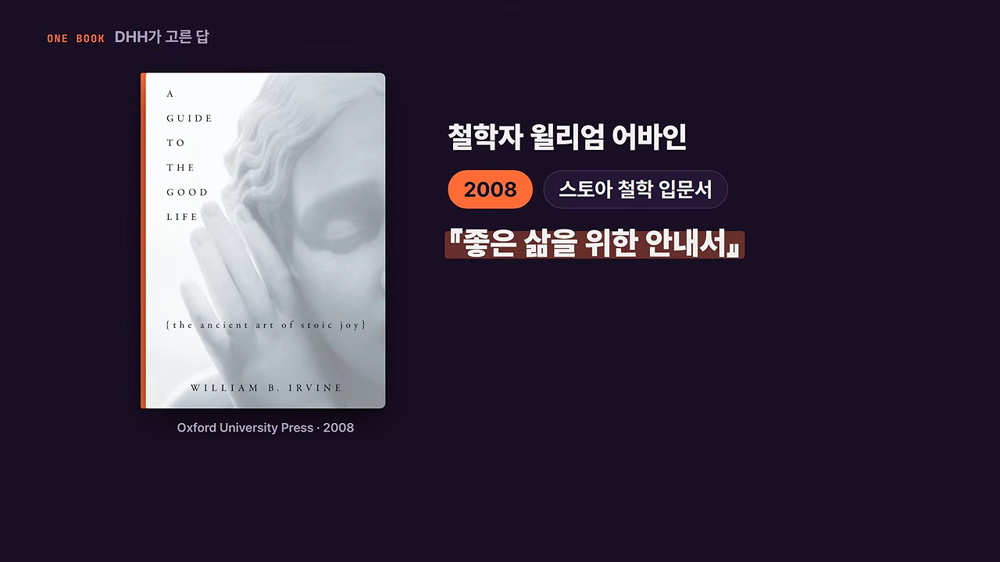
DHH가 이 대담 내내 쓴 사고방식이 여기서 나왔어요. 최악을 미리 그려 보는 부정적 시각화, 그리고 통제할 수 있는 것과 없는 것을 나누는 일이에요. 그는 이걸 마음의 도구라고 불러요. 같은 상황도 훨씬 견디기 쉬워진대요. 스트레스는 앞으로 더 많아질 테니, 마음을 단단하게 만드는 건 좋은 투자라는 거예요.
DHH는 원래 불안한 기질이 아닌데도 지난날 이것저것 많이 걱정했고, 돌아보면 그중 97%는 완전히 쓸데없었대요. 스토아 원칙을 몸에 익히고 나서야 벗어날 수 있었다고 해요. 누구에게나 도움이 되지만, 스스로 스트레스 큰 상황에 뛰어드는 창업자에게는 특히 그렇다는 말로 대담을 맺어요.